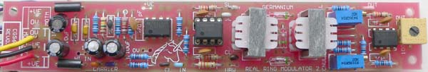
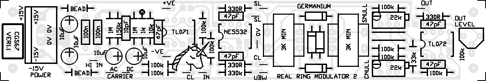
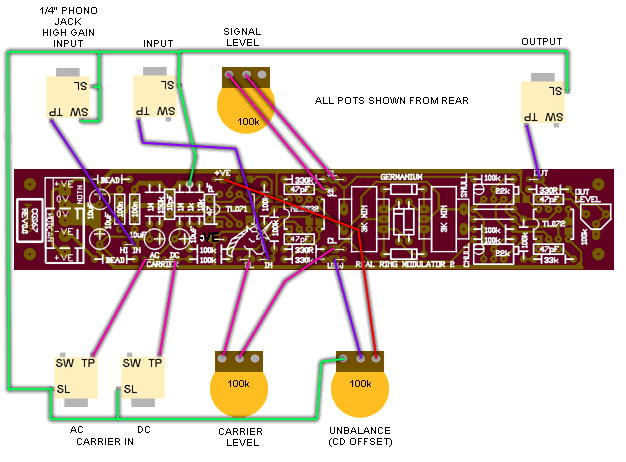

Active Real Ring Modulator
for music synthesizers.

Please note: This is not a guitar effect where you can "plug in your guitar and get a sound out". Extra circuity is absolutely essential, either directly wired, or as parts of other equipment. If you need to ask how to use it, then it's not for you.
Four quadrant multipliers have more or less replaced ring modulators in synthesizers, even though they still bear the label "ring modulator". The distortion in these is lower than that of a true diode ring modulator, because the diode voltage drops have been eliminated. This leads to better specifications, though in a noise maker, this is not always desirable.
Here is an updated version of the popular "Real Ring Modulator", a traditional diode and transformer ring modulator. This time, a preamplifier for external input, and input and output buffers for conventional synthesizer levels are included.
A little on how it works.
Click here for the Schematic
There are several distinct sections to this circuit.
A TL071 op amp is wired as a high input impedance 10x gain stage for dealing with small signals such as from microphones and electric guitars, though the latter's output is probably hot enough to drive the stage into distortion.
The NE5532 is wired as two adjustable, low output impedance buffers for driving the transformer coils of the ring modulator itself. They only differ in the upper one mixes the above pre-amp output with a synth level input, while the other has three inputs - two DC coupled, and one AC coupled. One of the DC coupled inputs is wired to a pot to allow a DC voltage to be fed into the modulator to unbalance it, thus changing its characteristics. The unbalance function is not unlike a wet/dry mixer.
The core of the circuit is of course the passive ring modulator, consisting of two transformers and four diodes in a ring. Traditionally these diodes should be germanium, though schottky diodes such as the BAT48 can be used. Even 1N4148 silicon diodes will work, though with greater distortion due to the larger voltage drop.
Following the core is a nulling circuit. The circuit allows either a positive or negative portion of the original carrier and input signals to be mixed with the output to reduce the amount of bleed though. If this is not desired, the trim pots can simply be left off the board.
Finally there is an output buffer and recovery amp. The 100k resistor marked with an asterisk on the schematic should be a lot lower - say 33k, or even as low as 10k, if you find you do not have enough gain. This will depend on the transformers used. With the 100k shown (REV0.0), the maximum gain is unity.
Construction
Note:
- On the REV0.0 PCB there is one capacitor marked 470pf. Put a 47pF in that location. The resistor mentioned above is at the bottom right end of the circuit board.
- On the REV0.0 and VER1.0 PCBs, the pad marked as 0V near the unicorn is actually -VE. If you have connected to this pad, please reroute your wire to a more suitable location.


| The basic wiring for the active ring modulator. The pots are viewed from the rear. The board version is out of date, but shows an example of where 0V can be connected to. On VER1.1 boards, there is a 0V pad near the first transformer.
|
Before you start assembly, check the board for etching faults. Look for any shorts between tracks, or open circuits due to over etching. Take this opportunity to sand the edges of the board if needed, removing any splinters or rough edges. (With the boards supplied by me, the edges are already milled, and etching faults are very rare.)
When you are happy with the printed circuit board, construction can proceed as normal, starting with the resistors first, followed by the IC socket if used, then moving onto the taller components.
Take particular care with the orientation of the polarized components such as electrolytics, diodes, transistors and ICs.
When inserting ICs into sockets, take care not to accidentally bend any of the pins under the chip. Also, make sure the notch on the chip is aligned with the notch marked on the PCB overlay.
The decoupling capacitors used are SMT1206 variety, though 805 will fit. Two of the locations will allow for a through hole component to be used instead, if desired. There is no need to install both the though hole and SMT parts at the same location. These two through-hole capacitors are not included in the parts list.
The part bumber of the Germanium diodes is not critical. Use whatever you can get.
The transformers I use are "M 0222" 3k-3kCT coupling transformers from www.altronics.com.au.
Other transformers will work in this circuit. You will want transformers with an impedance equal to or higher than these.
Setting up
If the unbalance pot is fitted, turn it fully CCW, checking with a meter that it's wiper is at zero volts.
Feed an audible signal into the input, and monitor the output. Adjust the SNULL trimmer for minimum output volume. It will be near the center of the trimmer's travel.
Remove the signal from the input and feed it into the AC coupled carrier input. Adjust the CNULL trimmer for minimum output volume. Again, it will be near the center of the trimmer's travel.
If you disconnected it, reconnect the wiper of the unbalance pot.
Notes:
- PCB info: 1" x 6" with four 3mm mounting holes 0.15" in from the edges.
- Please email me if you find any errors.
| Part | Quantity |
| Capacitors |
|---|
| 10pf | 1 |
| 47pF | 5 |
| 100n 1206SMT | 8 |
| 10uF 25V | 4 |
| Resistors |
|---|
| 330R | 3 |
| 1k | 1 |
| 10k | 1 |
| 33k | 1 |
| 100k | 8 |
| 150k | 1 |
| 330k | 1 |
| 1M | 2 |
| 22k trimmer | 2 |
| 100k trimmer | 1 |
| Semi's |
|---|
| Germanium diode | 4 |
| NE5532 | 1 |
| TL071 | 1 |
| TL072 | 1 |
| Misc. |
|---|
| Ferrite Bead (or 10R resistor) | 2 |
| 0.156 4 pin connector | 1 |
| 3k-3k coupling transformer | 2 |
| CGS67 PCB | 1 |
|
|
Parts list
This is a guide only. Parts needed will vary with individual constructor's needs.
If anyone is interested in buying these boards, please check the PCBs for Sale page to see if I have any in stock.
Can't find the parts? See the parts FAQ to see if I've already answered the question. Also see the CGS Synth discussion group.
Article, art & design copyright 2006 by Ken Stone
Modular Synth Home Disclaimer
|